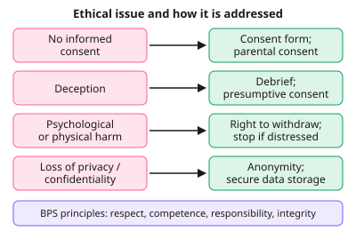

A-level Psychology Year 12 · Topic 6
Issues, debates and perspectives in psychology
This topic covers the big issues and debates that let you evaluate any study or theory in psychology.
We will look at ethics and practical issues, nature and nurture, free will and determinism, reductionism and holism, and idiographic and nomothetic approaches.
Then we consider individual and situational explanations, how useful research is, cultural and gender bias, and how to apply the main perspectives to the core studies.
- 7 subtopics
- 197 questions
- Free: 6.1 notes and 10 questions
In this topic
- 6.1Ethical considerations and practical issues in psychological researchFree below · 34 questions
- 6.2Nature-nurture and free will-determinism debatesOpen in Full Marks · 28 questions
- 6.3Reductionism-holism and idiographic-nomothetic approachesOpen in Full Marks · 27 questions
- 6.4Individual and situational explanations of behaviourOpen in Full Marks · 20 questions
- 6.5Usefulness of psychological research and application to everyday lifeOpen in Full Marks · 23 questions
- 6.6Cultural and gender bias in psychological researchOpen in Full Marks · 31 questions
- 6.7Applying psychological perspectives (cognitive, behaviourist, biological, psychodynamic, social) to the core studiesOpen in Full Marks · 34 questions
6.1 · Free notes
Ethical considerations and practical issues in psychological research

Key points
- The BPS Code of Ethics and Conduct (2021) is built on four principles: respect, competence, responsibility and integrity. Older guidelines (consent, deception, protection from harm, withdrawal, confidentiality, debriefing) are still used as the practical checklist.
- Informed consent: participants should know the aims and what they will do before agreeing. Children under 16 need parental consent. Where this is impossible, presumptive consent (asking a similar group) or prior general consent can be used.
- Deception is sometimes needed to avoid demand characteristics, but it breaks informed consent. It must be justified by the study's value, and participants must be debriefed afterwards, with the chance to withhold their data.
- Protection from harm: risk should be no greater than in everyday life. Examples include Milgram (stress) and Watson and Rayner's Little Albert (induced fear, never removed).
- Right to withdraw: participants can leave at any time and withdraw their data. This is undermined if they feel pressured to continue, as with Milgram's verbal prods.
- Confidentiality and privacy: data should be anonymised (numbers or pseudonyms), stored securely and protected under the Data Protection Act / UK GDPR. In case studies, identity can be revealed by unique details.
- Ethics committees carry out a cost-benefit analysis, weighing the benefits of the research against the risks to participants and society. Social sensitivity matters too, because findings can stigmatise groups.
- Animal research is regulated by the Animals (Scientific Procedures) Act 1986 and the 3Rs: Replace animals where possible, Reduce numbers, Refine procedures to lessen suffering. Critics question whether results generalise to humans.
- Practical issues affect the quality of data. Reliability is consistency (test-retest, inter-rater). Validity is whether the study measures what it claims, including ecological validity. Both are threatened by demand characteristics, social desirability bias and researcher bias.
- Sampling issues: volunteer or opportunity samples (often students or Western participants) can be biased, which limits generalisability. Lab studies give control but lower ecological validity and may lack mundane realism.
- Inter-rater reliability can be given as % agreement = (agreements ÷ total observations) × 100, or as a correlation. Reliability above about +0.80 is generally treated as good.
- There is a trade-off between ethics and validity: telling participants everything may change their behaviour, while deception improves validity but costs ethically. Evaluation must discuss this balance.
In more detail
- Worked inter-rater reliability: two observers agree on 45 of 50 observations → 45 ÷ 50 × 100 = 90% agreement, which counts as good reliability.
- Ethics in the core studies: Milgram used deception to avoid demand characteristics; Piliavin's subway passengers could not consent, withdraw or be debriefed; Simons and Chabris kept the gorilla secret but debriefed everyone afterwards.
- Dealing with problems: deception → full debrief and the chance to withdraw data; no consent possible → presumptive or retrospective consent; risk of harm → stop the study and offer support or counselling.
- Socially sensitive research: Sieber and Stanley (1988) defined it as research with possible consequences for the participants or the group they represent, such as studies of race and intelligence.
- Exam tip: name the guideline, explain how a specific study broke or kept it, then say how it was or could be dealt with. A generic list of ethical issues scores few marks.
Practice
Ethical considerations and practical issues in psychological research: 10 questions
Pick an answer to check it, or open the answer for the explanation.
1. Which of the following is one of the four ethical principles in the BPS Code of Ethics and Conduct (2021)?
- Anonymity
- Integrity
- Replication
- Objectivity
Show answer
B: Integrity. The BPS Code is built on respect, competence, responsibility and integrity. Anonymity is a way of protecting confidentiality, while replication and objectivity are scientific, not ethical, principles.
2. Participants are told a study is about learning, but it is really testing obedience. Which ethical issue does this show most clearly?
- Lack of confidentiality
- Deception
- Breach of the right to withdraw
- Lack of debriefing
Show answer
B: Deception. Misleading participants about the true aim is deception. It may be justified if necessary and if followed by a full debrief.
3. A researcher asks 30 people from the target population whether they would agree to take part in a deception study. Which type of consent is this?
- Retrospective consent
- Presumptive consent
- Prior general consent
- Parental consent
Show answer
B: Presumptive consent. Presumptive consent means asking a similar group whether the procedure is acceptable. If they agree, the real participants are presumed to agree.
4. A psychologist wants to observe 6-year-olds in a classroom experiment. Which action best meets the guidelines on consent?
- Ask the head teacher's opinion only
- Assume consent as it is a school
- Obtain consent from parents or guardians
- Ask the children to sign a form
Show answer
C: Obtain consent from parents or guardians. Children under 16 cannot give fully informed consent, so parents or guardians must give it. Assent from the child should also be sought.
5. In Milgram's study, participants were told 'You have no other choice, you must go on.' Which ethical guideline does this most clearly undermine?
- Debriefing
- Right to withdraw
- Competence
- Confidentiality
Show answer
B: Right to withdraw. The prods made participants feel unable to leave, which undermines the right to withdraw.
6. Which procedure best protects participants' confidentiality in a published study?
- Using real names with permission slips
- Using participant numbers and storing data securely
- Giving each participant a debrief
- Telling participants the aims in advance
Show answer
B: Using participant numbers and storing data securely. Anonymising data with numbers or pseudonyms, and keeping it secure, protects identity. Debriefing and telling aims relate to other guidelines.
7. A memory study asks participants to learn word lists in a quiet lab. Which practical issue is most likely to be raised about it?
- Low ecological validity
- Lack of control
- Presumptive consent
- Researcher anonymity
Show answer
A: Low ecological validity. Learning word lists in a lab is unlike everyday memory use, so findings may not apply to real life. This is low ecological validity.
8. In a questionnaire, people consistently under-report how much alcohol they drink. Which practical issue does this show?
- Inter-rater unreliability
- Social desirability bias
- Sampling bias
- Order effects
Show answer
B: Social desirability bias. Participants answer in ways that make them look good. This lowers the validity of self-report data.
9. A study uses only volunteer psychology undergraduates from one UK university. What is the main limitation of this sample?
- It is too reliable
- It is unethical
- It lacks generalisability
- It cannot be debriefed
Show answer
C: It lacks generalisability. A volunteer sample of students is unrepresentative of the wider population, so findings may not be generalised.
10. Two observers record the same 40 behaviours. They agree on 34 of them. What is their percentage agreement?
- 85%
- 90%
- 80%
- 75%
Show answer
A: 85%. 34 ÷ 40 × 100 = 85%. This is above 80%, which is usually treated as good inter-rater reliability.
Keep going in Full Marks
Full Marks has 34 questions on Ethical considerations and practical issues in psychological research (24 more than here), set out in practice levels. You also get notes and 3D models for all 7 subtopics of Issues, debates and perspectives in psychology, plus games, timed exams and past papers.
On your exam board
Not in the AQA and Edexcel specifications.